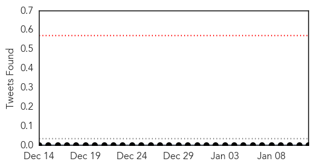
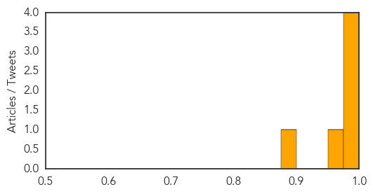

Toggle navigation
Early Warning
Daily Alerts
Swine Flu
Jan 12, 2015
Compare to:
-
Dengue Fever
Hemmorhagic Fever
Mold/Fungal Infection
Influenza
Meningitis
Pertussis / Whooping Cough
Middle East Respiratory Syndrome
Cholera
Hepatitis
Chikungunya
Yellow Fever
Bubonic Plague
West Nile Virus
Ebola
Measles
Unknown
Mumps
30 Day Trends
Web: 4
alerts
, 6
warnings
Twitter: 0
alerts
, 0
warnings
Top Articles:
1.000
Govt steps in to fight swine flu
0.998
8 confirmed swine flu cases in Haryana: Official
0.997
Swine flu claims fourth victim in the Capital
0.995
One more succumbs to swine flu, cases at 50
0.953
H1N1 claims fourth victim, seven new cases reported
0.876
Sixth swine flu death, seven new cases in Delhi
Top Tweets:
No tweets found for Jan 12, 2015
Web/News Articles
Tweets

Article Locations
Article Confidences
